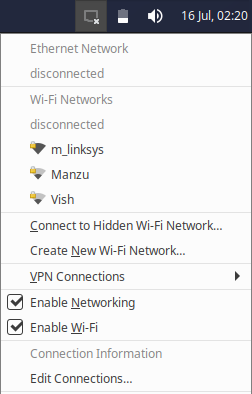
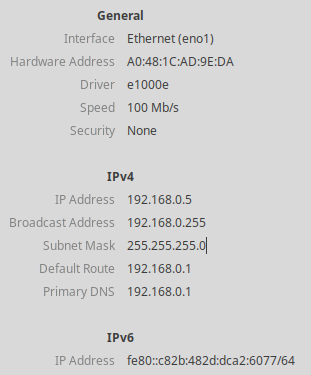
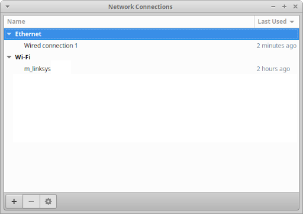
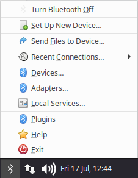
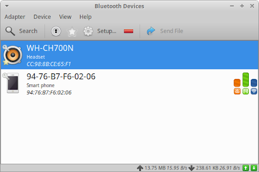

Quer se encontre ligado a um computador da sua rede local ou uma máquina a quilómetros de distância através da Internet, o estado da sua ligação de rede é sempre visível na área de notificações do painel. As definições de de personalização da rede encontram-se disponíveis na opção Configuração de Rede Avançada, acessível através da categoria Hardware do  , da categoria Definições do
, da categoria Definições do  (Ctrl + Esc), e no Localizador de aplicações (Alt + F3).
(Ctrl + Esc), e no Localizador de aplicações (Alt + F3).
Quando não existe acesso à Internet, seja devido à desativação da rede ou ao facto de ter sido estabelecida uma ligação de rede, surgirá um ícone de desligado no painel, indicativo desta situação. Quando efetuar a ligação, o ícone, o ícone irá varia dependendo do tipo de ligação que estiver a utilizar.

Clicar no ícone de irá abrir um menu que apresenta o estado da conetividade a redes Ethernet ou Wi-Fi, bem como uma listagem de quaisquer redes Wi-Fi alcançáveis. Caso esteja a ligar-se a uma rede com fios, irá ligar-se automaticamente, ao passo que caso selecione uma rede Wi-Fi no menu pela primeira vez, poderá aparecer uma caixa de diálogo caso seja necessária a introdução de uma palavra-passe.
A entrada de menu Ligar a uma Rede Wi-Fi Oculta... permitir-lhe-á ligar-se a uma rede Wi-Fi cujo nome se encontre oculto através da introdução do nome da rede e, caso necessário, da palavra-passe. A entrada de menu Criar Nova Rede Wi-Fi... irá permitir que crie um novo ponto de acesso sem fios a partir do seu computador. A entrada irá abrir uma caixa de diálogo onde pode configurar o nome da rede, método de segurança e chave a ser utilizada.

Selecionar o item de menu Informações de ligação abrirá uma janela que com informação acerca dos dispositivos de ligação, incluindo os seus endereços MAC, controladores e velocidades, bem como informação relativa aos endereços IPv4 e IPv6. Selecionar a entrada de menu Editar Ligações... abrirá a janela de configuração de rede.
Para se desligar de uma rede, selecione a entrada de menu Desligar debaixo do do tipo de ligação apropriado. É possível ativar e desativar as ligações com e sem fios se selecionar as opções Ativar a Rede ou Ativar Wi-Fi. O Ativar a Rede irá ativar ou desativar as redes com e sem fios, enquanto o Ativar Wi-Fi se limita a ativar ou desativar as redes sem fios.
Para alterar as configurações das ligações de rede, selecione a entrada Editar Ligações... no menu de ou abra a Configuração de Rede Avançada através do  , do Localizador de aplicações ou do .
, do Localizador de aplicações ou do .

A janela lista as ligações de rede existentes categorizadas por tipo de ligação. A parte inferior da janela possui botões para adicionar ou remover ou editar a ligação de rede selecionada. Ao editar uma ligação de rede, pode configurar as suas funcionalidades, tais como o nome da ligação, se utiliza VPN, o clone do endereço MAC, opções de segurança, de proxy e de endereço IP e servidores DNS.
Caso clique no botão Adicionar uma nova ligação na parte inferior do ecrã irá aparecer uma janela para que selecione o tipo de ligação. A lista de tipos de ligação inclui os tipos Hardware, tais como DSL e Banda Larga Móvel, tipos virtuais, tais como Ponte e VPN (Rede privada virtual).( Caso o tipo de ligação VPN que pretende criar não de encontre listado, terá de instalar o seu suplemento, o com OpenVPN( network-manager-openvpn-gnome
network-manager-openvpn-gnome wireguard
wireguard network-manager-openconnect-gnome
network-manager-openconnect-gnome
![[Nota]](../../libs-common/images/note.png)
|
|
|
Infelizmente, os modems dialup não são suportados pelas Ligações de Rede. Para saber como utilizar um modem dialup, consulte a wiki comunitária do Ubuntu relativa a Modems dialup. |
Caso se encontre conectado a ligação com fio ou móvel e possua um adaptador sem fios ligado ao seu computador ou portátil, pode partilhar a sua ligação com outro computador. A fim de configurar o ponto de acesso sem fios, o método mais simples é selecionar a entrada de menu Criar Nova Rede Wi-Fi... através das opções de do painel. Pode também abrir as configurações de Ligações de Rede e adicionar ou modificar uma ligação Wi-Fi. Na janela propriedades da ligação, selecione o separador Definições IPv4 e altere o para Partilhada com outros computadores da lista expansível.
O Bluetooth é uma tecnologia sem fios popular que nos permite emparelhar facilmente os nossos computadores, telemóveis e tablets com dispositivos de entrada e saída, tais como auscultadores, altifalantes, ratos, teclados e impressoras. Caso um adaptador Bluetooth se encontre ligado ao seu computador, irá surgir um applet Bluetooth na área de notificações do painel. Caso o ícone do Bluetooth se encontre desligado, o adaptador Bluetooth encontra-se desativado e passar o rato sobre o ícone irá igualmente apresentar este estado na tooltip. Clicar no ícone de fará aparecer um menu com opções de ação , tais como alterar o estado do adaptador e enviar um ficheiro para um dispositivo, bem como opções de configuração, tais como as definições do adaptador e do dispositivo.

O item do menu superior irá permitir-lhe ativar ou desativar o adaptador Bluetooth dependendo do seu estado atual. O item de menu e Configurar Novo Dispositivo... abrirá uma caixa de diálogo para o guiar na ligação do dispositivo Bluetooth. A entrada de menu Adaptadores... irá abrir uma janela onde pode definir a visibilidade do adaptador e o nome do transmissor. A entrada de menu Dispositivos... irá abrir as configurações do Gestor de Bluetooth, o qual também é acessível através do  , do Localizador de aplicações, ou do .
, do Localizador de aplicações, ou do .

A janela de configurações irá listar todos os dispositivos Bluetooth que se tenham ligado ao seu computador. Para se ligar a novos dispositivos, clique no botão Procurar e os dispositivos visíveis aparecerão na lista. Selecione o novo dispositivo e emparelhe-o ou ligue-o através do botão Emparelhar presente na barra de ferramentas ou nos itens que no menu de contexto do clique direito do rato. Podem ser encontradas opções adicionais para renomear, confiar, remover ou enviar um ficheiro para um dispositivo na barra de ferramentas ou no menu de contexto, Para efetuar alterações às configurações do adaptador, abra o menu Adaptador e selecione Preferências.
Para se ligar a vários tipos de servidores, pode utilizar o  → → . Para se ligar a um servidor, siga os seguintes passos:
→ → . Para se ligar a um servidor, siga os seguintes passos:
Vá a →
Selecione o Tipo de serviço apropriado e insira as informações da ligação
Clique en ; caso esteja a tentar ligar-se a um servidor que exija credenciais, ser-lhe-á solicitada a introdução de uma palavra-passe
Após a se ligar com sucesso ao servidor, irá surgir um ícone com uma descrição dos detalhes da ligação na janela doGigolo. Para criar marcadores para as ligações, clique com o botão direito do rato sobre uma ligação e selecione Criar Marcador. Na janela Editar Marcadores, pode dar um nome ao marcador e configurar outras opções, incluindo a opção de ligação automatizada. Quando terminar, clique em para criar o marcador.
|
|
|
|
O nome de utilizador das Partilhas do Windows deve estar no formato |
|
|
|
|
A fim de se ligar a redes Samba (partilhas do Windows) através doGestor de ficheiros Thunar, terá de possuir o pacote |
 |
 |
|
| Capítulo 7. Definições - Hardware |

|
Capítulo 9. Impressão e Digitalização |